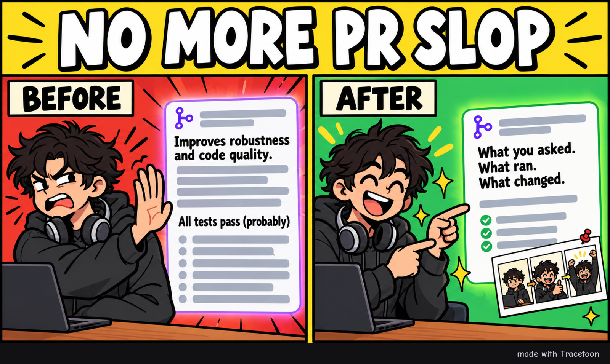

Tracetoon
AI-written pull requests are mostly slop: vague, padded, and confident about tests nobody saw pass. Tracetoon writes the PR from what actually happened in your agent sessions.

Better PRs
The sessions behind your branch are already on your machine: Claude Code, Codex and Antigravity keep their logs. Tracetoon finds the ones that produced this branch and turns them into a redacted digest your agent writes from. You see the exact text, and approve it, before anything is posted.
- Written from evidence. What you asked for, the plan you approved, the decisions you made, and every test, build and lint run with its result.
- Honest about what's known. Something that wasn't captured is "not captured", not "not done".
- Short and reviewable. The problem and the result first, then the reason for the approach, what was checked, and where to start reviewing.
- Checked before you post. An advisory claim check marks sentences the evidence contradicts or doesn't establish.
- Your words stay yours. Text you write in the PR, or edit on GitHub later, is kept on the next update.
Comics
Each PR can get a one-off comic: a joke about how the work really went, with characters and an art style made up for that PR. Comics are optional.
Install
One command installs Tracetoon for every agent on your machine.
# macOS, Linux, Git Bash curl -fsSL https://raw.githubusercontent.com/Tingsters/tracetoon/main/install.sh | sh # Windows PowerShell irm https://raw.githubusercontent.com/Tingsters/tracetoon/main/install.ps1 | iex
Restart your agent, then in any repo with your work on a branch, ask: "Open a PR for this branch with Tracetoon."